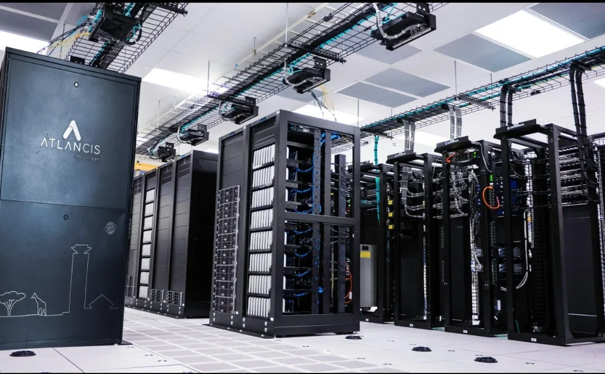
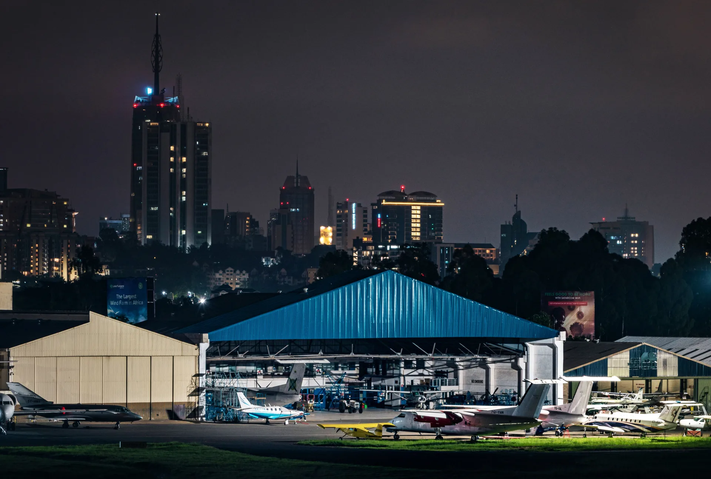
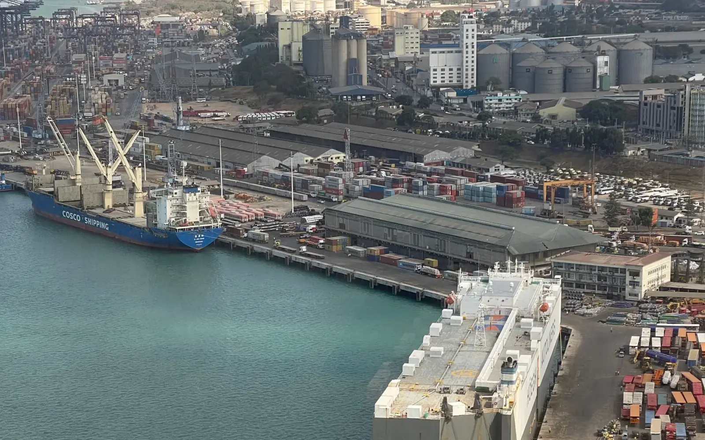

A directory-led look at registered network presence and interconnection across selected Kenyan facilities.

01 · Tier ratings
Describe specified design and operational characteristics of a facility.
02 · Capacity
Power, racks and site area show how much compute a location can hold.
03 · Interconnection
Networks on site and exchanges present show who is directly reachable.
Buyers need all three answers. A network count is not a tier rating, and neither is a megawatt.


Mombasa brings the international routes. Nairobi concentrates networks, facilities and enterprise demand. Network presence is one signal of concentration. It does not by itself settle strategic importance.
Interconnection is checkable. That is why DC254 records it, facility by facility.
Not traffic volume. A registered network may pass little or no traffic.
Not resilience or service quality. Presence says nothing about uptime or support.
Not commercial terms. Availability, pricing and access vary by tenant and network.
Presence is a signal of where the ecosystem is accumulating. It is not a verdict on quality.
Figures: DC254 directory Q3 2026 (verified September 2026), ranking re-checked against all 14 Kenyan facilities recorded in PeeringDB on 9 October 2026. Rankings unchanged.